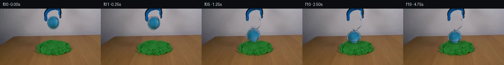

![首帧]()

Round 00
2026-11-05T05:02:28.459607+00:00像素候选变化代码 +286/−0inspection 更新
pixels 4f0e778944e08528 · code 53c12c905ad3057a
查看本轮 generate.py 真实 diff
--- previous/generate.py
+++ current/generate.py
@@ -0,0 +1,286 @@
+"""PixelWorld-Vision-Input generator for case_0017_attempt_01.
+
+Scene (from first_frame.png + prompt.txt): a blue ball rests in the open claw
+of a blue-black grabber suspended above a pile of green kinetic sand on a
+wooden table. The grabber releases the ball; the ball falls under gravity,
+impacts the sand, presses a crater with raised side lips, and settles.
+
+All pixels are produced locally: analytic wall model inpainting, alpha sprite
+extraction, rigid sprite rotation, dense displacement warps (OpenCV remap),
+and layer compositing. Frame 00 is copied byte-identical from first_frame.png.
+"""
+from pathlib import Path
+import numpy as np
+from PIL import Image, ImageDraw
+import cv2
+
+import artifact_io
+
+CASE = Path(__file__).parent
+F0 = np.array(Image.open(CASE / "first_frame.png").convert("RGB"))
+H, W, _ = F0.shape
+assert (H, W) == (144, 256)
+
+CX = 133 # ball / impact centre x
+BCY0 = 33.0 # ball centre y while held (sprite anchor, integer row 33)
+R_CORE = 15.0 # sprite core radius
+CONTACT_D = 32.8 # fall distance to first sand contact
+G = 2 * CONTACT_D / 1.25 ** 2 # gravity px/s^2 -> contact exactly at t=1.25 s
+
+# ---------------------------------------------------------------- wall model
+def wall_model(frame):
+ """Per-row smooth wall colour by interpolating clean samples on each side
+ of the grabber/ball column."""
+ ys = np.arange(14, 58)
+ L, Rm = [], []
+ for y in ys:
+ L.append(np.median(frame[y, 96:111].reshape(-1, 3), axis=0))
+ Rm.append(np.median(frame[y, 158:174].reshape(-1, 3), axis=0))
+ L = np.asarray(L, float); Rm = np.asarray(Rm, float)
+ # gentle vertical smoothing
+ k = np.array([0.25, 0.5, 0.25])
+ for a in (L, Rm):
+ for c in range(3):
+ a[:, c] = np.convolve(a[:, c], k, mode="same")
+ xs = np.arange(W)[None, :]
+ t = (xs - 96.0) / (174.0 - 96.0)
+ model = L[:, None, :] + t[..., None] * (Rm - L)[:, None, :]
+ out = np.zeros((H, W, 3))
+ for i, y in enumerate(ys):
+ out[y] = model[i]
+ return out
+
+WALL = wall_model(F0)
+
+# ------------------------------------------------------- ball sprite in f0
+def extract_ball(frame, wall):
+ y0, y1, x0, x1 = 17, 57, 111, 157
+ ys, xs = np.mgrid[y0:y1, x0:x1]
+ patch = frame[y0:y1, x0:x1].astype(float)
+ wm = wall[y0:y1, x0:x1]
+ dist = np.sqrt(((patch - wm) ** 2).sum(axis=2))
+
+ core = (((xs - CX) / R_CORE) ** 2 + ((ys - BCY0) / R_CORE) ** 2) <= 1
+ # envelope: core-expanded disk down to y=48, narrowing blur tail to y=56
+ half = np.sqrt(np.maximum(0.0, 17.5 ** 2 - (ys - BCY0) ** 2))
+ tail = (ys > 48)
+ half[tail] = np.sqrt(max(0.0, 17.5 ** 2 - (48 - BCY0) ** 2)) * \
+ np.clip((56 - ys[tail]) / 8.0, 0, 1)
+ env = (np.abs(xs - CX) <= half) & (ys >= 19)
+ # never pick up grabber arms (only present above y=31, outside x 120..144)
+ arms = (ys <= 30) & ((xs < 120) | (xs > 144))
+ env &= ~arms
+
+ alpha = np.zeros(ys.shape)
+ alpha[core & env | core] = 1.0
+ fringe = env & ~core
+ alpha[fringe] = np.clip((dist[fringe] - 9.0) / 26.0, 0, 1)
+
+ rgb = patch.copy()
+ soft = (alpha > 0.02) & (alpha < 0.98)
+ a = alpha[..., None]
+ rgb[soft] = np.clip((patch[soft] - (1 - a[soft]) * wm[soft]) / a[soft], 0, 255)
+ return x0, y0, rgb.astype(np.uint8), (alpha * 255).astype(np.uint8)
+
+BX0, BY0, BALL_RGB, BALL_A = extract_ball(F0, WALL)
+
+PAD = 72 # sprite rotation canvas, ball anchor placed at its centre (36,36)
… diff truncated; 199 more lines …